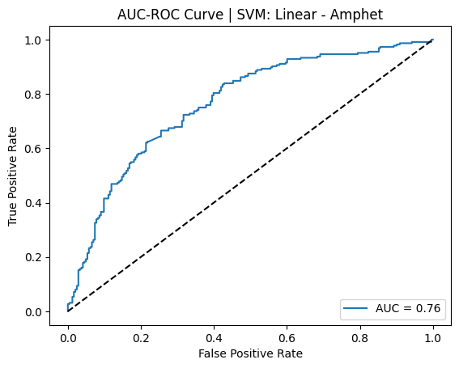

Drug Use Prediction (Imbalanced Classification)
Binary Classification · Imbalanced Learning · Model Comparison · Precision/Recall · AUC

Python
Pandas
Scikit-learn
SVM
Naïve Bayes
AUC
Imbalanced Data
Built and evaluated multiple machine learning classifiers to predict drug use outcomes, with a focus on
handling class imbalance and choosing the right evaluation metrics.
A key outcome was reframing the task from multiclass to binary classification, which substantially improved
model stability and performance.
GitHub Repo
Problem Statement
Predicting drug use from survey-style or categorical-heavy datasets can be difficult due to noisy signals,
limited feature representation, and severe class imbalance. Traditional accuracy can be misleading when positive
cases are rare.
The goal of this project was to build a robust classification workflow and compare models under both imbalanced
and balanced conditions using precision, recall, and AUC.
Data & Features
The dataset included structured attributes describing individuals and behavioral patterns. The target variable
was formulated as a classification outcome representing drug use.
- Feature types: categorical-heavy + structured numeric fields
- Challenge: strong class imbalance in the target label
- Focus: model performance on minority class detection (recall/precision)
Approach
We compared multiple classifiers and evaluated performance under both imbalanced and balanced settings.
The project emphasized decision-making around problem framing and metric selection.
- Reframed the task from multiclass to binary classification
- Evaluated models with metrics beyond accuracy (precision, recall, AUC)
- Compared balanced vs imbalanced training to quantify performance change
- Models explored included Linear SVM, Perceptron, and Complement Naïve Bayes
(Implementation details can be summarized here — e.g., encoding strategy, scaling, cross-validation, or resampling method.)
Results
Best Balanced Model (Linear SVM)
Precision: 70% · Recall: 70% · Accuracy: 70% · AUC: 76%
Best Probabilistic Model (Complement NB)
Precision: 51% · Recall: 68% · Accuracy: 69% · AUC: 78%
Balancing Impact
~15–20% improvement in recall and precision vs imbalanced training
- Binary classification significantly improved performance vs multinomial framing
- Linear SVM performed best overall on balanced training
- Complement Naïve Bayes produced strong AUC with competitive recall
Model Insights
This project highlighted tradeoffs between margin-based and probabilistic classifiers on categorical-heavy datasets.
It also emphasized why recall/precision and AUC are essential when the positive class is rare.
- Simpler models (e.g., Perceptron) struggled under imbalance and noisy categorical inputs
- Linear SVM benefited from balancing and produced stable decision boundaries
- Naïve Bayes offered strong AUC despite lower precision, suggesting different threshold tradeoffs
Challenges & Limitations
- Class imbalance made naive accuracy misleading
- Categorical-heavy features required careful preprocessing and validation
- Model choice depended heavily on business goal (maximize recall vs precision)
Extensions & Future Work
- Probability calibration and threshold tuning to optimize precision/recall tradeoffs
- More advanced imbalance handling (SMOTE, class-weighting strategies)
- Model interpretability (feature attribution / SHAP) to understand key drivers
Key Takeaways
This project strengthened my experience in building end-to-end classification workflows, selecting the right metrics,
and making modeling decisions based on data realities (imbalance) and downstream goals (precision vs recall).